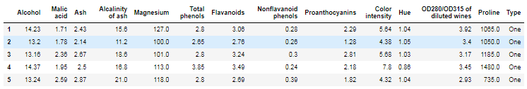
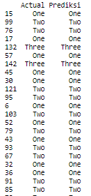
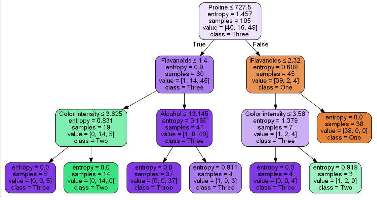

Decision Tree¶
Apa itu decision tree ?¶
Decision tree atau pohon keputusan adalah alat pendukung keputusan yang menggunakan model keputusan yang berbentuk seperti pohon. Decision tree memetakan berbagai alternatif yang mungkin untuk mengatasi suatu masalah, dan terdapat juga faktor-faktor kemungkinan yang dapat mempengaruhi alternatif tersebut beserta estimasi akhirnya jika memilih alternatif yang ada. Decision tree merupakan salah satu metode yang bisa digunaan untuk menampilkan algoritma dimana hanya berisi pernyataan kontrol bersyarat.
Kelebihan dan Kekurangan Decision Tree¶
Kelebihan :¶
- Mudah dimengerti dan dipahami. Orang-orang bisa memahami model decision tree dengan penjelasan singkat.
- Memiliki nilai walaupun dengan sedikit data yang rumit. Wawasan penting dapat dihasilkan berdasarkan para ahli yang menggambarkan situasi dan preferensi mereka untuk hasil.
- Membantu menentukan nilai terburuk, terbaik, dan nilai yang diharapkan untuk berbagai skenario.
- Menggunakan model kotak putih jika hasil diberikan oleh model.
- Dapat dikombinasikan dengan teknik pengambilan keputusan lainnya.
Kekurangan :¶
- Tidak stabil, yang berarti bahwa perubahan kecil dalam data dapat menyebabkan perubahan besar dalam struktur decision tree optimal.
- Relatif tidak akurat. Banyak prediktor lain memiliki kinerja yang lebih baik dengan data serupa. Hal ini dapat diatasi dengan mengganti decision tree tunggal dengan forest of decision tree acak. Namun hutan yang acak tidak semudah memahami decision tree tunggal.
- Untuk data yang termasuk variabel kategorikal dengan jumlah level yang berbeda, perolehan informasi dalam decision tree cenderung mendukung atribut dengan level yang lebih banyak.
- Perhitungan bisa menjadi sangat kompleks, terutama jika banyak nilai tidak pasti dan / atau jika banyak hasil dikaitkan.
Implementasi studi kasus decision tree menggunakan python 3.7.2¶
Pada kasus ini saya akan mengklasifikasi type - type wine dengan menggunakan dataset " wine_dataset.csv " yang dapat anda download di repositori.
Yang kita butuhkan untuk mengimplementasi kasus ini adalah tools jupyter notebook.
Berikut adalah langkah - langkahnya :¶
- Instal library
pip install pandas #untuk load dataset csv pip install sklearn #untuk model klasifikasi pip install graphviz #untuk tampilan pohon keputusan pip install pydotplus #untuk tampilan pohon keputusan
- Import library
# load library import pandas as pd from sklearn.tree import DecisionTreeClassifier # import decision tree classifier from sklearn.model_selection import train_test_split # import fungsi trai_test_split from sklearn import metrics # import scikit-learn metrics module for accuracycalculation
librari pandas berguna untuk load dataset berupa csv. librari sklearn berguna untuk model pengklasifikasian, dll.
- Load dataset
# load dataset col_names = ['Alcohol','Malic acid','Ash','Alcalinity of ash','Magnesium','Total phenols','Flavanoids','Nonflavanoid phenols','Proanthocyanins','Color intensity','Hue','OD280/OD315 of diluted wines','Proline','Type'] dataset = pd.read_csv('wine_dataset.csv', header=None, names=col_names) ### Mengambil semua data untuk percobaan data = dataset.loc [1:150,'Alcohol':'Type'] data.head()
Pertama kita berikan dulu nama - nama untuk kolom dataset tersebut pada list col_names. Lalu input dataset menggunakan pd alias pandas. Lalu mengambil data dari baris 1 hingga 150 dan dari kolom 'alcohol' hingga kolom 'type', dan menampilkan 5 baris teratas dari dataset tersebut menggunakan data.head().

- Split dataset menjadi kolom fitur dan target variabel
# split dataset in features and target variabel feature_cols = ['Alcohol','Malic acid','Ash','Alcalinity of ash','Magnesium','Total phenols','Flavanoids','Nonflavanoid phenols','Proanthocyanins','Color intensity','Hue','OD280/OD315 of diluted wines','Proline'] x = data[feature_cols] # feature y = data.Type # target variabel
Selanjutnya membuat list untuk kolom fitur yaitu semua kolom kecuali kolom class atau type. lalu variabel x sebagai penampung kolom fitur, dan variabel y sebagai class atau target variabel.
- Split dataset menjadi data training dan data test
# split dataset menjadi data training dan data test x_train, x_test, y_train, y_test = train_test_split(x, y, test_size= 0.3, random_state=1) # 70% training dan 30% test secara acak
Selanjutnya saya men-split dataset menjadi 70% data training dan 30% data test.
- Create decision tree classifier
# create decision tree classifier clf = DecisionTreeClassifier(criterion='entropy', max_depth=3) # train decision tree classifier clf = clf.fit(x_train, y_train) # predict the response for dataset y_pred = clf.predict(x_test)
Selanjutnya mengklasifikasikan dengan menggunakan metode decision tree type entropy.
- Mencetak akurasi
# model accuracy print ("Akurasi :",metrics.accuracy_score(y_test,y_pred)*100,"%")
Output yang ditampilkan adalah :
Akurasi : 97.77777777777777 %
- Menampilkan hasil prediksi
# tampilan prediksi df = pd.DataFrame({'Actual':y_test,'Prediksi':y_pred}) print (df)
Menampilkan data actual dan data hasil prediksi.
Output :

- Menampilkan hasil pohon keputusan
# visualisasi decision tree from sklearn.externals.six import StringIO from IPython.display import Image from sklearn.tree import export_graphviz import pydotplus dot_data = StringIO() export_graphviz(clf, out_file=dot_data, filled=True, rounded=True, special_characters=True, feature_names = feature_cols,class_names=['One','Two','Three']) graph = pydotplus.graph_from_dot_data(dot_data.getvalue()) graph.write_png('wine.png') Image(graph.create_png())
Output yang dihasilkan :

Itulah hasil implementasi dari studi kasus decision tree pada dataset wine_dataset.csv. Semoga dapat diterima dan mudah untuk dipahami.